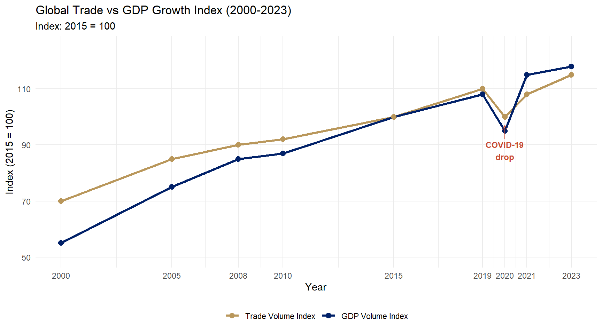
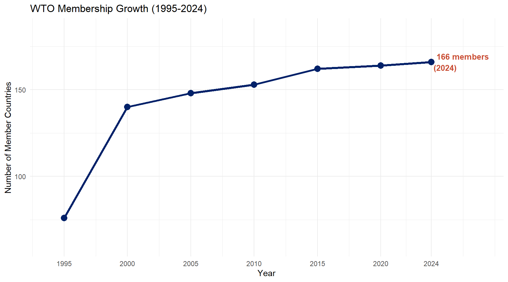
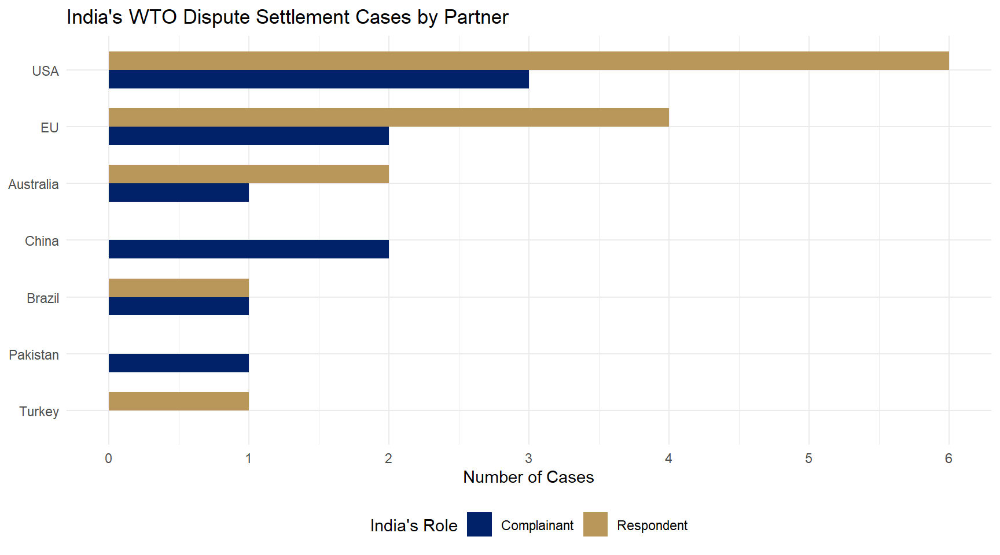

Econ 2203 | International Trade and Policy in Agriculture
Department of Development Economics
2026-07-18
Lecture 12 examined the foreign exchange market — how currencies are priced, how the exchange rate affects export competitiveness, and how India manages the rupee.
Key ideas from Lecture 12:
The Bridge to Today
Trade actually happens through the forex system — but what rules govern the trade itself?
Who decides that a country cannot ban imports arbitrarily? Who enforces fair competition?
→ Enter the World Trade Organization
General Agreement on Tariffs and Trade (1947)
| Round | Year | Key Focus |
|---|---|---|
| Geneva | 1947 | Tariff cuts |
| Dillon | 1960–61 | Tariff cuts |
| Kennedy | 1964–67 | Tariff + anti-dumping |
| Tokyo | 1973–79 | NTBs |
| Uruguay | 1986–94 | Agriculture, services, WTO |
Why GATT Failed Agriculture
Three critical weaknesses:
WTO replaced GATT on January 1, 1995 as a permanent international organisation with legal personality, headquarters in Geneva.
The most ambitious multilateral trade negotiation in history — 8 years, 123 countries, launched in Punta del Este, Uruguay
What was new:
Signed at: Marrakesh, Morocco — April 15, 1994 (Marrakesh Agreement)
India’s role: Active participant; founding WTO member
Uruguay Round Achievements
Single Undertaking Principle: “Nothing is agreed until everything is agreed” — countries had to accept the entire package, preventing cherry-picking.

Figure 1: Global Trade vs GDP Growth Index (2000-2023) Source: WTO, World Trade Statistical Review 2024; World Bank, WDI.
Key Facts (2024)
| Item | Detail |
|---|---|
| Headquarters | Geneva, Switzerland |
| Members | 166 (as of 2024) |
| Founded | January 1, 1995 |
| India | Founding member |
| Budget | ~CHF 197 million/year |
| Staff | ~700 |
| Official languages | English, French, Spanish |
Two-thirds of members are developing countries — WTO is not a “rich country club”
Director-General:
Ngozi Okonjo-Iweala (Since February 1, 2021)
Re-appointed for second term (2025–2029)
India has been a founding and strategically active member — one of the most influential developing country voices at the WTO

Figure 2: WTO Membership Growth (1995-2024) Source: WTO Secretariat.
The WTO rulebook rests on five foundational pillars — all member commitments flow from these
1. Most Favoured Nation (MFN) Non-discrimination among all members: a concession given to one must be given to all. Art. I GATT, Art. II GATS
2. National Treatment Imported goods must be treated no less favourably than domestic goods once inside the border. Art. III GATT
3. Bound Tariffs Members commit to ceiling tariff rates (bound rates) in their schedules — cannot raise above without compensation.
4. Reciprocity Concessions are exchanged mutually — no free riding. Basis of negotiating rounds.
5. Transparency Members must notify laws, regulations, and trade measures to the WTO. No hidden barriers.
Why these matter for India: India’s bound tariff schedule gives it enormous policy space (bound 113% average on agriculture vs. applied ~35%). These principles simultaneously protect India from arbitrary foreign barriers.
How MFN Works
If India gives the USA a 0% tariff on apples, under MFN, India must give the same 0% to ALL WTO members — Canada, Australia, Chile, New Zealand, China.
You cannot discriminate between WTO members.
Permitted Exceptions:
India’s FTA Example
India–UAE CEPA (2022): - India gives 0% tariff on many UAE goods - WTO members do NOT automatically get this rate - WTO-legal because CEPA is an FTA under Art. XXIV
But India must ensure CEPA covers substantially all trade — otherwise challenged at WTO
India’s FTA network (2024): UAE, Mauritius, Japan, South Korea, ASEAN, Singapore, Sri Lanka, Thailand (partial), Australia, EFTA
MINISTERIAL CONFERENCE (Supreme body — every 2 years)
│
GENERAL COUNCIL (Day-to-day — Geneva ambassadors)
┌────┴────────────────────────┐
│ │
Trade Policy Review Body Dispute Settlement Body (DSB)
│
├── Council for Trade in GOODS (GATT)
│ ├── Committee on Agriculture
│ ├── SPS Committee
│ ├── TBT Committee
│ ├── Anti-Dumping Committee
│ └── Safeguards Committee
│
├── Council for Trade in SERVICES (GATS)
│
└── Council for TRIPSIndia’s Geneva Mission maintains a permanent delegation of ~30 diplomats/trade negotiators to engage all WTO bodies. India chairs or co-chairs several committees.
| MC | Location | Year | Key Outcome |
|---|---|---|---|
| MC1 | Singapore | 1996 | “Singapore issues”: investment, competition, procurement |
| MC3 | Seattle | 1999 | Failed — “Battle of Seattle” |
| MC4 | Doha | 2001 | Launched Doha Development Agenda |
| MC5 | Cancún | 2003 | Failed — G-20 coalition walked out |
| MC6 | Hong Kong | 2005 | Partial agriculture framework |
| MC | Location | Year | Key Outcome |
|---|---|---|---|
| MC9 | Bali | 2013 | TFA + Peace Clause |
| MC10 | Nairobi | 2015 | Export subsidy elimination |
| MC11 | Buenos Aires | 2017 | No consensus |
| MC12 | Geneva | 2022 | Fisheries subsidies |
| MC13 | Abu Dhabi | 2024 | E-commerce moratorium extended |
India hosted MC6 in Hong Kong context and has been central to the G-33 and G-20 agricultural coalitions at every MC
| Agreement | What it covers |
|---|---|
| AoA | Agriculture: market access, domestic support, export subsidies |
| SPS | Food safety, animal & plant health measures |
| TBT | Product standards, labelling, testing procedures |
| Anti-Dumping | Duties against below-cost imports |
| SCM | Subsidies & countervailing duties |
| Agreement | What it covers |
|---|---|
| Safeguards | Emergency import restrictions |
| GATS | Trade in services (banking, telecom, education) |
| TRIPS | Intellectual property rights |
| TFA | Customs procedures, border facilitation |
| Fisheries | Subsidies for fishing fleets |
For agricultural trade, the most important are: AoA, SPS, TBT, Anti-Dumping, and SCM. Lectures 14–16 cover these in depth.
WTO’s most important institutional innovation — binding, rules-based dispute resolution replacing GATT’s “diplomatic” process
The DSU Process:
Appellate Body Crisis
Since 2017, the USA has blocked appointments to the AB — currently non-functional (needs 3 members, has 0 active).
MPIA: Multi-Party Interim Appeal Arbitration Arrangement — 53 members (including India) agreed to use arbitration as workaround.
USA objects: AB “overreached” its mandate by creating precedents.
As Complainant (India won):
DS456 — US-India Solar Cells (2016) USA’s domestic content requirements for solar panels under the National Solar Mission violated WTO national treatment (Art. III). India won — US had to remove requirements.
Other active cases India initiated: challenges to US steel tariffs, EU carbon measures
As Respondent (India lost/challenging):
India has participated in 50+ disputes as complainant, respondent, or third party — reflecting deep WTO engagement

Figure 3: India’s WTO Dispute Settlement Cases by Partner Source: WTO Dispute Settlement Gateway (as of 2024).
India leads or co-leads multiple developing country coalitions:
G-33 (Chair: Indonesia, India active) 46 developing countries. Demands: Special Products (SP) — exempt sensitive crops from tariff cuts; Special Safeguard Mechanism (SSM) — emergency tariff response to import surges.
G-20 Agricultural Group (India, Brazil, China, South Africa) Demands deep cuts in US/EU trade-distorting domestic support; improved market access; elimination of export subsidies. Not to be confused with G20 heads of state summit.
NAMA-11: Developing country coalition on industrial tariff negotiations — resist deep cuts.
Why Coalitions Matter
WTO operates by consensus — no voting for most decisions. Coalitions give developing countries blocking power.
India’s G-33 Asks: - 1.5 billion farmers in developing countries need protection from import surges - Special Products: food security crops (rice, wheat, pulses) protected from tariff cuts - SSM: right to raise tariffs temporarily if imports surge and hurt local farmers
India has successfully used these coalitions to block unfavourable outcomes at Cancún (2003) and other MCs.
Launched: November 2001, Doha, Qatar — framed as a “development round” post-9/11 solidarity
The Doha Agenda:
Why it stalled — the political economy: - USA: Farm Bill politics, Congress won’t cut subsidies - EU: defensive on sugar, dairy, beef - India/China: demand strong SSM for agriculture; resist industrial tariff cuts (NAMA)
July 2008 Mini-Ministerial — The Collapse
India’s then-Commerce Minister Kamal Nath walked out over SSM provisions. The US wanted an import surge threshold of 140% of base; India demanded 110%. Talks collapsed.
Symbolically important: India prioritised farmer protection over deal.
Doha Round is effectively dead as a single undertaking. Some elements (TFA, fisheries subsidies, export subsidy elimination) have been harvested. The agriculture agenda — the core — remains unresolved after 23+ years.
First multilateral agreement fully concluded at WTO — in force February 22, 2017
Key provisions: - Advance rulings on tariff classification and origin - Single window for customs clearance - Expedited release of perishable goods - Risk-based inspection (not 100% physical checks) - Transit facilitation for landlocked countries - Appeal procedures for customs decisions
Benefits for India’s agri exports: Perishables (mangoes, grapes, vegetables) need fast clearance. TFA obliges importing countries to have expedited procedures.
India’s TFA Implementation:
Time Release Study (India):
| Channel | Before | After TFA |
|---|---|---|
| Air cargo | 120 hrs | 49 hrs |
| Sea cargo | 180 hrs | 68 hrs |
World Bank estimates: full TFA implementation could reduce trade costs by 14.3% for developing countries
First new multilateral WTO agreement on fisheries subsidies
Prohibits: - Subsidies for Illegal, Unreported, and Unregulated (IUU) fishing - Subsidies for fishing overfished stocks - Subsidies for fishing in unregulated high seas
Context: ~USD 22 billion/year in global fisheries subsidies; fishing stocks critically depleted — 34% overfished globally
Developing country flexibilities: - Transition period of 2 years for some provisions - Inshore fishing (within 12 nautical miles) largely exempted - LDCs: longer transitions
India’s Position and Interests
India’s concerns: - Protect small-scale traditional fishermen (Kerala, Tamil Nadu, Andhra Pradesh coastal communities) - India’s fishing subsidies (fuel subsidy, boat building) support livelihood of ~14 million fishers - Demand: developed country distant-water fleets (EU, China, Japan) subsidised for decades — they caused the overfishing problem, not Indian small fishermen
India negotiated carve-outs for artisanal fishing within national EEZ (200 nautical miles). Still under negotiation for full implementation.
The Policy Conflict
India’s food security system: 1. MSP (Minimum Support Price) set above world prices for wheat and rice 2. FCI procures at MSP from farmers 3. PDS distributes at subsidised rates to poor households
WTO critics argue: purchasing above world prices = Amber Box support (trade-distorting domestic support) that must be counted against India’s AMS commitment
India’s defence: The Fixed External Reference Price (FERP) used to calculate AMS uses 1986–88 world prices — which were artificially depressed by US/EU subsidies at the time. The baseline is unfair.
The Numbers
India’s rice MSP (FY2024): ₹2,183/quintal
FERP (1986–88): USD 116/tonne = ~USD 11.6/quintal
Current MSP ≈ USD 26.3/quintal
AMS = (26.3 − 11.6) × 42 million tonnes procured ≈ ~USD 6.2 billion
De minimis limit (10% of rice production) ≈ ~USD 2.8 billion
→ India likely exceeds its de minimis threshold → Peace Clause protection needed
Agreement on Public Stockholding for Food Security
Bali MC9 (December 2013) — negotiated primarily by India under Commerce Minister Anand Sharma
Protection offered: WTO members will not formally challenge developing country public stockholding programs even if they technically exceed de minimis AMS limits, provided:
India notifies rice, wheat, and coarse cereal procurement every year under the Peace Clause.
The Catch
The Peace Clause is India’s single most important WTO negotiating achievement in recent years. Without it, India’s PDS + FCI procurement system would be legally vulnerable to challenge.
TRIPS Agreement (1995): Patents, copyrights, trademarks, geographical indications, and plant variety protection.
Key tension for agriculture: TRIPS Art. 27.3(b) requires protection of plant varieties either through patents or a sui generis system.
India’s response — PPVFRA (2001): Protection of Plant Varieties and Farmers’ Rights Act — India’s sui generis system
Key PPVFRA provisions: - Breeders’ rights: 15–18 years protection for new varieties - Farmers’ right: to save, use, sow, re-sow, exchange, and sell farm-saved seed (CANNOT sell under breeder’s brand) - Researchers’ exemption: use protected variety for research/breeding - National Gene Fund: benefit-sharing from commercialisation
Monsanto Bt Cotton Case
Monsanto held trait patent on Bt cotton gene in India. Charged royalties (trait value) to all seed companies using the Bt technology.
India’s seed companies: royalties too high, technology should be accessible.
2021: Supreme Court ruled plant varieties and essentially biological processes are not patentable under Indian Patents Act Section 3(j).
Monsanto’s patent on Bt gene effectively invalidated in India.
India resists TRIPS-plus obligations pushed in FTA negotiations (longer patent terms, data exclusivity for agrochem companies) that would restrict farmer seed access
India’s Bound Tariff Schedule — Agriculture
| Commodity | Bound | Applied (2024) | “Water” |
|---|---|---|---|
| Rice | 80% | 25% | 55% |
| Wheat | 100% | 40% | 60% |
| Maize | 60% | 50% | 10% |
| Sugar | 150% | 100% | 50% |
| Palm oil | 300% | 100% | 200% |
| Milk powder | 60% | 30% | 30% |
Average bound tariff on agriculture: 113.5% Average applied tariff: ~35%
The “Water in the Tariff” = Policy Space
The gap between bound and applied tariffs means India can raise applied tariffs without WTO violation. This is India’s key defensive instrument.
Example: When palm oil imports surged hurting domestic oilseed farmers, India raised the applied tariff from 30% to 100% — still below the 300% bound rate. No WTO violation.
AMS De Minimis: 10% of production value (developing country rate — vs. 5% for developed). This is why India gets more space than the US/EU.
E-Commerce Moratorium
Since 1998: WTO members agreed no customs duties on electronic transmissions (digital goods, streaming, software downloads).
Extended at every MC including MC13 (Abu Dhabi 2024).
India’s position: End the moratorium. India loses potential tariff revenue on digital goods (music, films, software, data). India and South Africa are the most vocal opponents.
India argues: rich country digital companies benefit most; developing countries lose fiscal revenue.
Joint Statement Initiatives (JSIs)
Plurilateral negotiations outside the main WTO consensus framework: - E-commerce JSI (90 members) - Investment facilitation JSI - Domestic regulation (services)
India did NOT join the e-commerce JSI or investment facilitation JSI.
India’s concern: JSI outcomes should not become part of WTO multilateral rules without consensus of all 166 members.
Reflects India’s defensive posture on digital trade — India wants to preserve policy space to regulate data and digital economy.
Six Things to Remember from Lecture 13
WTO replaced GATT on Jan 1, 1995 — the Uruguay Round (1986–94) was the turning point; 166 members, India a founding member
Five core principles: MFN, National Treatment, Bound Tariffs, Reciprocity, Transparency — these are the rules of the game
DSU is WTO’s crown jewel — binding dispute settlement; India has won and lost important cases; Appellate Body crisis unresolved
Doha Round is effectively dead — agriculture at the centre of the stalemate; US/EU domestic politics vs. India/developing country demands
Peace Clause (2013) is India’s lifeline — protects MSP-based procurement from WTO challenge; permanent solution still pending
India uses WTO strategically: high bound tariffs for policy space, G-33/G-20 coalitions for negotiating power, DSU for defending interests
Lecture 14 (July 28, 2026): Agreement on Agriculture (AoA)
The WTO agreement that directly governs India’s agricultural trade policy
We will cover:
Further Reading
Key Data Sources
Econ 2203 | International Trade and Policy in Agriculture